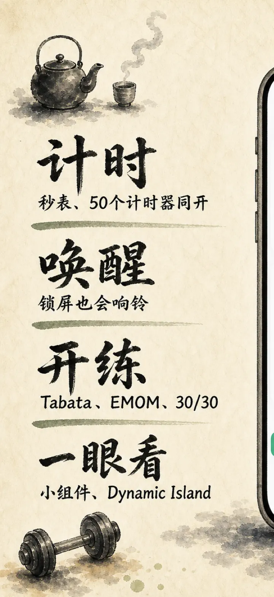
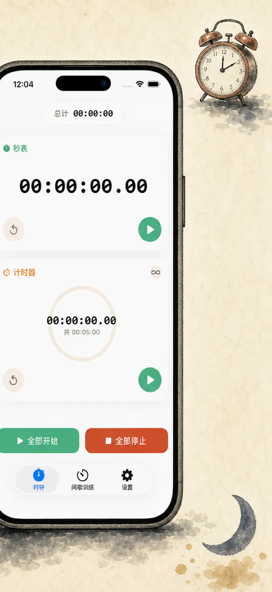
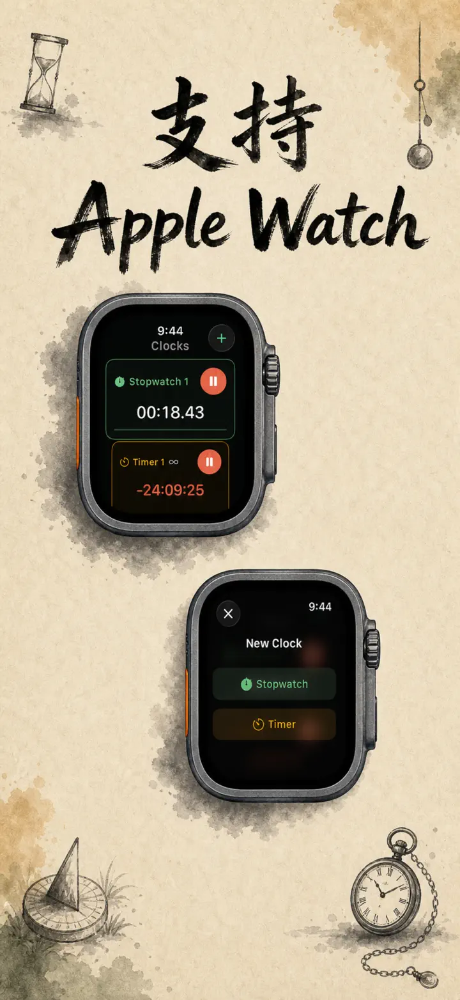
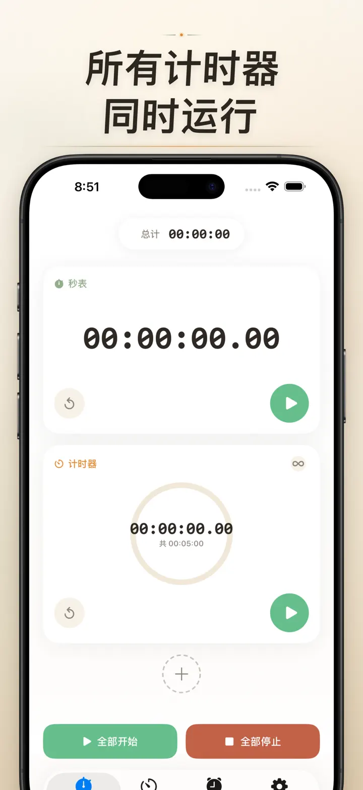
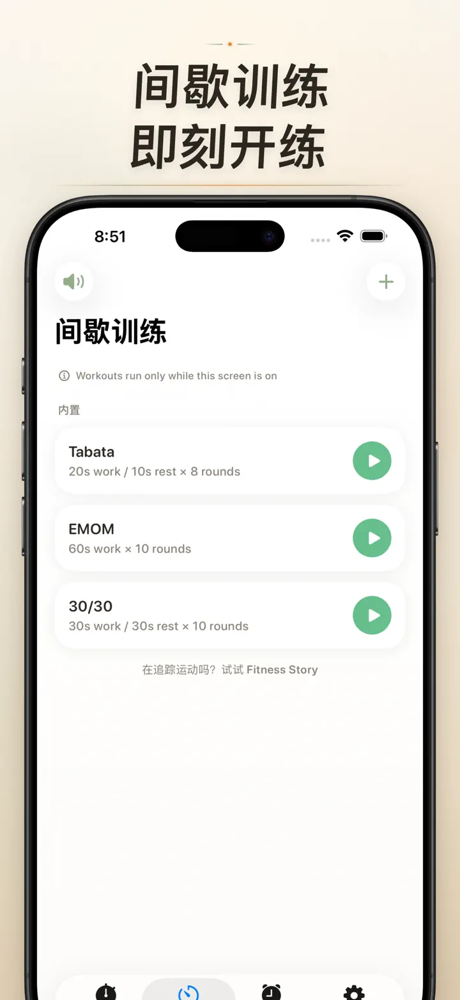
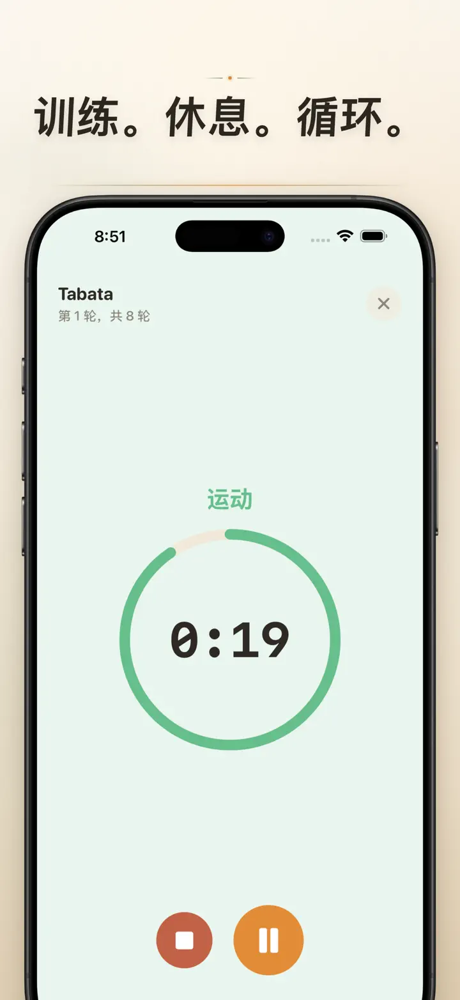
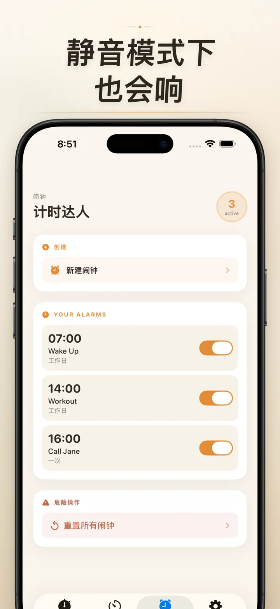

Timer on Me
计时器、闹钟、秒表、HIIT
全新日期闹钟：为任意未来日期和时间设置一次性提醒，支持定期闹钟、50个计时器同时运行、HIIT与Tabata训练以及Apple Watch。
从 App Store 下载
关于本应用
计时达人是你在 iPhone、iPad、Apple Watch 上的多任务计时器与秒表工具。最多 50 个计时器同时运行，HIIT、Tabata、番茄钟一键启动，而且铃声一定响 — 手机锁屏、App 关闭都绝不漏。
闹钟
- 起床闹钟与提醒闹钟，可自定义标签与每周重复
- 由 AlarmKit 驱动 — 手机锁屏、计时达人关闭也照样响
- 可选稍后提醒（3 / 5 / 9 / 15 / 30 分钟）或关闭稍后提醒
- 内置铃声任你选，也可导入自己的音乐
- 专属闹钟标签页，一点即可启用或关闭
间歇训练与运动
- 内置 Tabata、EMOM、30/30 三种预设，两步即可开练
- 自定义间歇编辑器：工作、休息、回合数的分钟和秒数灵活设置
- 全屏训练模式，阶段颜色提示，可一键静音
- 训练中途可暂停、跳过、重新开始，进度不丢
Apple Watch
- 完整原生 watchOS 应用，不是只同步显示的空壳
- 手腕上同时运行多个秒表和计时器
- 秒表精度到百分之一秒
- 专属表盘复杂功能，一点即开
- 手机不在身边也能独立运行
50 个计时器同时跑
- 一屏最多运行 50 个计时器和秒表
- 单独启动或群组同步开始、停止、重置
- 自动循环，回合训练超顺手
- 归零后继续计时，超时自动追踪
- 进度条颜色提示：50% 转黄、10% 转红
- 拖拽排序、自定义名称
可靠的提醒
- AlarmKit：手机锁屏、App 关闭，铃声照样响
- 灵动岛与实时活动，锁屏也能看进度
- 主屏幕小组件：小、中、大三种尺寸
- 多款内置铃声，包含铃铛、鸟鸣、经典电话音
- 点一下即可试听铃声
- 长时间使用可开启「屏幕常亮」
自定义与分享
- 小数、总计、百分比按习惯切换显示
- 保存和覆盖常用方案，下次一键调出
- 计时配置可导出为 CSV、JSON 或纯文本
- 分享给同事、学生、教练或队友
iPhone、iPad、Apple Watch 全适配
- 各种屏幕尺寸自动适配
- iPad 支持 Split View 分屏
- 支持 34 种语言
适用场景
- 番茄钟学习、考研考公冲刺、专注工作
- HIIT、Tabata、CrossFit、撸铁循环
- 拳击、格斗、跆拳道回合计时
- 煲汤、泡面、烘焙、煮蛋、厨房计时
- 瑜伽、普拉提、冥想、呼吸练习
- 课堂教学与团体活动
- 乐器练习、演讲汇报
- 桌游、派对游戏
立即下载计时达人，把每一分每一秒都握在手里 — 健身房、办公室、家里都顺手。
隐私政策：https://masawata.net/privacy-policy.html 服务条款：https://www.apple.com/legal/internet-services/itunes/dev/stdeula/
屏幕截图






Timer on Me
全新日期闹钟：为任意未来日期和时间设置一次性提醒，支持定期闹钟、50个计时器同时运行、HIIT与Tabata训练以及Apple Watch。
从 App Store 下载